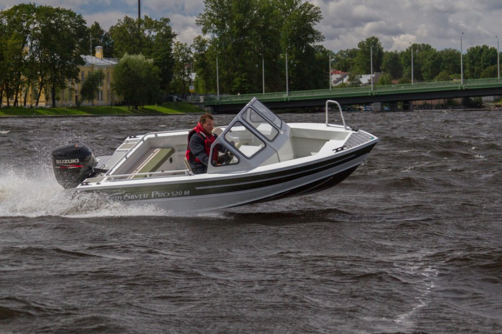

Катер NorthSilver PRO 520 M (НортСильвер Про 520 M)
Очень удобная во всех отношениях моторная лодка, скажем даже, - это мечта рыбака и охотника. Она обладает отличными ходовыми качествами.
Прочный алюминиевый корпус и малая осадка дадут Вам возможность пройти по мелководью за щукой или спрятаться в камышах, поджидая прилёта дичи. Гарантия хорошего настроения просто обеспечена, даже если погода в этот день испортится.
Технические характеристики катера:
| Параметр | NorthSilver PRO 520 M |
|
Длина |
5.20 м |
|
Ширина |
1.85 м |
|
Масса |
455 кг |
|
Вместимость |
5 человек |
|
Рекоменд. мощность двигателя |
60-70 л.с. |
|
Материал корпуса |
AMg |
Стандартное оборудование:
- Вращающиеся сидения водителя и пассажира
- Ходовые и якорный огни
- Электрический насос для откачки воды
- Контейнер для аккумулятора
- Ключ отключения массы
- Носовой рундук для швартового оборудования
- Панель с приборами
- Разъем тока 12V
- Лобовое стекло с откидной дверцей
- Механическое рулевое управление
- Кокпит с автоматическим стоком воды за борт.
- Криналиновые площадки
- Транец для резервного двигателя

{kind=link}
{kind=link}
{kind=link}
{kind=link}
{kind=link}
{kind=link}
{kind=link}
{kind=link}
{kind=link}
{kind=link}
{kind=link}
{kind=link}
{kind=link}
{kind=link}
{kind=link}
{kind=link}
{kind=link}
{kind=link}
{kind=link}
{kind=link}